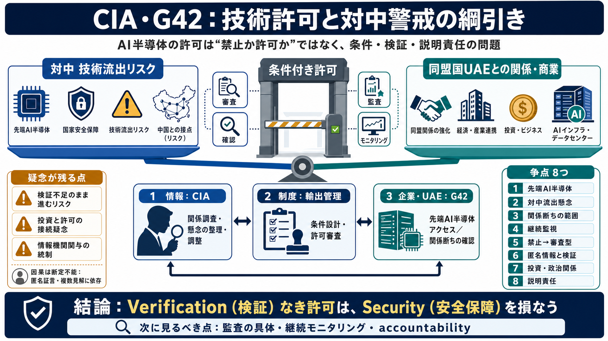

Tap the share button on a reply, then select “Instagram ...
Tap the share button on a reply, then select “Instagram Story.” Just tap “Add” to share the reply — along with the post …

WSJ報道の要点：UAEのG42が先端AI半導体へ到達するまでに、「情報収集」「輸出規制」「資金・関係」がどう絡んだか。
AI半導体の供給は国家安全保障の要所だが、同盟国への技術提供は政治的リスクも伴う。結果として、スパイ（情報）と制度（規制）、商業（投資）が同じ意思決定に入り込む。
「締め出す/許可する」だけではなく、“どの程度・どんな前提で・どう確認するか”が論点になる。CIAが単に警戒するだけでなく、調整役として関与したとされる。
WSJの構図は、CIAのベテラン工作員、UAE側の国家安全保障担当者、そしてG42（CEOを含む経営陣）が、技術許可の前提を巡って交差する。
当初はブラックリスト級の制限が検討されたが、最終的には規制プロセスを通したアクセス拡大の枠組みに収束した、と描かれる。狙いはリスク管理と現実政治の両立。
ガノンは、G42が中国企業（または中国国家と結びつき得る主体）との関係をどこまで断つかを調べ、UAE側に「米側懸念を理解し改善を進めたか」を確認させる役割を担ったとされる。
対中懸念は残り、米国内にもCIAの見立てを疑う勢力がいたと報じられる。よって、検証（verification）が十分に完了しないまま政治判断が進むリスクが常にある。
本件で争点になりやすい要素を、報道要約と質問観点から整理する（因果は未確定）。
トランプ政権移行期に、UAE側がトランプの暗号資産関連企業へ5億ドル規模の投資を行ったと記述される。因果は証明されていないが、「見返りとしてチップアクセスが広がったのでは」という疑念が生まれやすい構図になる。
G42は監視目的のAI活用や、米国法令に関する問題、対中の結びつき等が背景として詳述される。変数が多いほど、単純な“信じる/信じない”ではなく管理・監査設計が不可欠になる。
判断を二択にせず、(a)技術供与の検証可能性、(b)情報機関の関与を統制する仕組み、(c)資金関係が影響したかをどう検証・抑制するかで読むべきだ、という見解が提示される。
本報道は、AI覇権競争の最前線で「情報」「規制」「商業ロビー」が結びつく実態を示す。最も重要なのは、誰がどの責任を持ち、何が“検証可能”だったかである。
Tap the share button on a reply, then select “Instagram Story.” Just tap “Add” to share the reply — along with the post …
To reply to a repost, start by locating your friend's repost that you'd like to reply to. Click on it, and you'll notice…
Tap the share button on a reply, then select “Instagram Story.” Just tap “Add” to share the reply post it's responding t…
The following is part of a Washington Post article of today. This may be Obama’s military intervention, but if she is a …
Sure, you can create your own content and hope they come, but replying on other people's posts? That is an entirely diff…